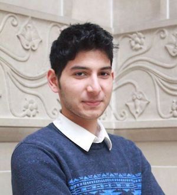
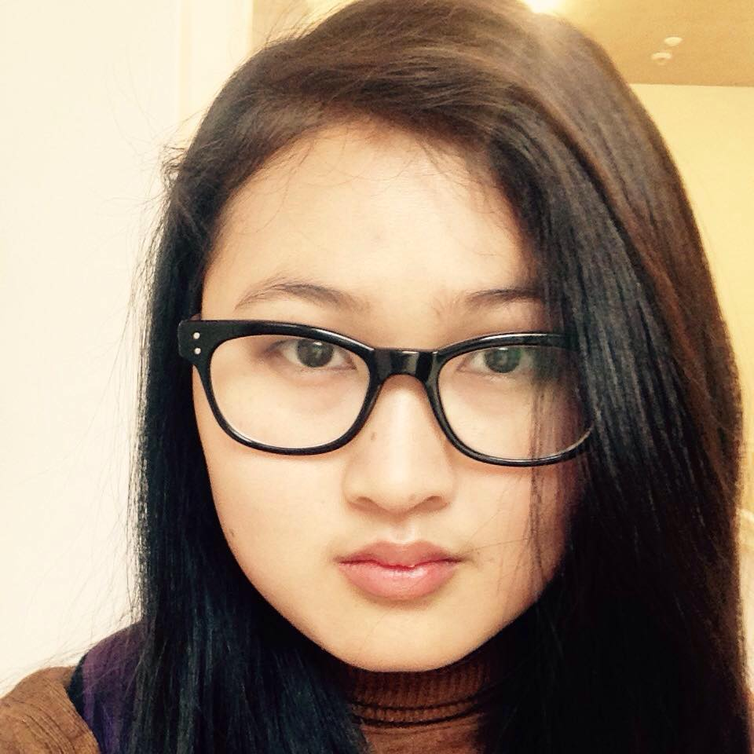

I've chosen to be an IA as I have a good sense of what the role entails, I've had experience with working with webpages and their layouts in CSC 170 and various other CS class projects
Hi, I’m Sidhant Ahluwalia, I'm a computer science major at the University of Rochester. My area of study is focused in Human-computer Interaction, ties in my interest in learning how design can make or break a product.
I am looking to explore entrepreneurship from multiple aspects, being hands-on, developing a product and meanwhile also looking for disruptive tech as a venture capitalist. The skills to be a successful product manager resonate with what I do as a student on campus, running the entrepreneurship club, being a member of the SA Senate and being part of a student VC firm are all such examples. These experiences have taught me to handle multiple projects simultaneously and work with teams delegating tasks. I look forward to expanding my career post graduation
Hours, minutes, and seconds cease When I let go my inner disease. Palettes of color exude their rgb While Mr. CSS hums his melody. In the world of web development Design is my ideal amusement.
Hello! Welcome to my site. Let me introduce myself. Not to make you all confuse, I actually have three different names: Hnin Oo Wai, Lotus May and May Shin Lyan. The first is my official name which I hardly use in my personal life. The second is my pen name and the last is the name I use in my daily life. Forget all I say, you can call me May. :)
I am majoring in Computer Science and Business with a cluster in Psychology and Korean language. LOVE PEACE AND COMPASSION are my bread and butter. Also, I am an ardent follower of Buddhism and interested in Vipassana Meditation. You are always welcome for a chat if you want to know more about meditation or may be you can teach me back.
I really enjoy writing and debugging web code. Web code is one subject that makes 100% sense to me and gets me excited to start my day. Over the semester break I ended up coding three websites, and enjoyed learning about new CSS frameworks like Bootstrap. You can visit them in the homepage.
Hello! My name is Alexander Punj and I am a student at the University of Rochester! Before applying to colleges, my father and I went on a road trip starting at the University of Rochester and ending at MIT
Along the way, we visited Hobart & William Smith Colleges, RPI, Clark University, Brandeis University, Bates College, and Bowdoin College before settling in central Boston. I enjoyed RPI, Rochester, Bowdoin and MIT the most out of that trip. The reason I chose to visit these colleges is that their admissions policy included optional submission of SAT and or ACT, as my test-taking skills were poor and was reflected on my SAT scores. I was leaning towards the University of Rochester because this school was the only one that offered an Audio & Music Engineering major. I applied to the university as an Early Applicant, and subsequently join the varsity tennis team when I entered. However, I have left that major as a minor and left the tennis team. I now am an Economics major with a minor in Audio & Music Engineering in my junior year.